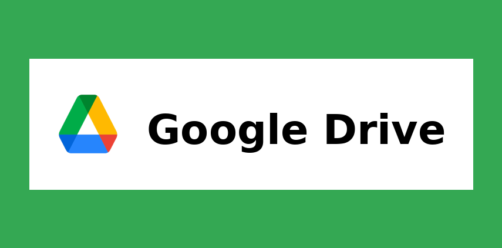

Best Cloud Storage Services in 2025
James McGill | Updated on April 3rd 2025Privacy and Technology Consultant In a hurry? Here’s the top Cloud Storage Service for 2025:
- 🏆 TotalDrive: TotalDrive is your go-to cloud storage solution when you want to keep your files safe and accessible from anywhere. With its unique Neverlost™ technology, you never have to worry about losing your data to ransomware or other threats. Plus, it works seamlessly across your devices, making it super easy to back up, sync, and share your important documents and memories whenever you need them.
- Get the best Cloud Storage Service of 2025 here.
- Read more about TotalDrive here.
Staying organized used to mean carrying around external drives, managing endless folders, and hoping you didn’t accidentally delete something important. But in 2025, cloud storage services are changing the game. With real-time syncing, automatic backups, and seamless collaboration tools, you can now store, share, and access your files from anywhere—without the hassle.
Whether you're a freelancer juggling multiple projects, a small business looking to back up critical data, or a large organization managing a team of remote workers, these platforms help you stay connected and productive. The best part? They do the heavy lifting, so you don’t have to.
But First, What Exactly Is Cloud Storage?
Cloud storage is a modern solution for keeping your files safe, accessible, and organized. Unlike local storage—where you save files directly on your device’s hard drive or an external storage device—cloud storage lets you upload your data to secure servers managed by a service provider. Think of it as having a virtual hard drive that’s always within reach—whether you're at your desk, on the go, or collaborating with your team.
One of the biggest differences between cloud and local storage is flexibility. With local storage, you’re tied to a specific device, and losing that device could mean losing your data. Plus, physical storage has limits—you can only store as much as your hard drive or external device can handle. Cloud storage, on the other hand, allows you to access your files from any internet-connected device and typically offers scalable storage options. If you need more space, you can simply upgrade your plan.
Instead of constantly worrying about losing your files or running out of space, you can back up important documents automatically, share large files with a single link, and work with teammates in real time. Cloud storage makes your digital life easier and more secure, giving you peace of mind that your data is both protected and accessible from anywhere.
That said, not all platforms are the same. Some have limited storage, others lack strong security features, or just don’t integrate well with your existing apps. Choosing the right cloud storage service can be the difference between frustration and effortless file management.
If you're ready to streamline how you store and share data, you're in the right place. We’ve reviewed the top cloud storage providers for 2025, so you can skip the guesswork and pick a service that meets your needs. Let’s dive in!
An overview of the best Cloud Storage Services for 2025:
- 🥇 1. TotalDrive — Total Drive keeps your files safe and accessible with its unique Neverlost™ technology, protecting against data loss and ransomware. Seamlessly back up, sync, and share your important documents across all your devices, knowing your data is secure.
- 🥈 2. Google Drive — Google Drive is a versatile cloud storage platform that lets you store, share, and access your files from any device. Integrated with Google Workspace, it supports real-time collaboration and offers scalable storage from 15GB to 5TB per user, making it ideal for both personal and business use.
- 🥉 3. NordLocker — NordLocker is a secure cloud storage and file encryption tool that protects your data with end-to-end encryption and zero-knowledge architecture. It lets you safely store, sync, and share files across devices, keeping your sensitive information private and accessible only to you.
- Frequently Asked Questions about Cloud Storage Services (FAQ).
Why Use Cloud Storage Services?
Cloud storage tools are transforming how people and businesses manage their digital assets—especially in an era where accessibility, security, and collaboration matter more than ever. Here’s why more users are making the switch:
- Access Your Files Anytime, Anywhere: Cloud storage services offer the convenience of accessing your files anytime, anywhere, without the hassle of carrying physical storage devices or worrying about leaving important documents behind. Whether you're working from home, traveling, or using a different device, your files are securely stored online and can be retrieved with just a click. This flexibility is especially useful for remote work, collaboration, and managing documents on the go, making cloud storage an essential tool for modern life.
- Automated Backups: With cloud storage, automated backups ensure your data is continuously protected without any extra effort on your part. You can set it and forget it, knowing that your files are automatically saved and updated in real time. This means you don’t have to worry about losing important work due to hardware failures, accidental deletions, or device theft, giving you peace of mind and easy data recovery when needed.
- Secure File Sharing: Secure file sharing through cloud storage makes collaborating easier by eliminating the hassle of email attachments and file size limits. Instead of compressing files or splitting them into multiple parts, you can simply send a secure link, allowing others to view, edit, or download the document in real time. This streamlined approach not only saves time but also ensures that collaborators always have access to the most up-to-date version. Plus, cloud storage providers typically include permission settings, so you can control who can view or edit your files, keeping your data safe while facilitating efficient teamwork.
- Seamless Collaboration: Cloud storage enables seamless collaboration by allowing multiple users to work on the same file simultaneously, eliminating the confusion of multiple file versions. Real-time editing and commenting features keep everyone on the same page, making it easy to track changes and provide feedback instantly. Whether your team members are in the same office or scattered across the globe, cloud-based collaboration ensures everyone can contribute efficiently, streamlining teamwork and keeping projects moving forward.
- Save Space on Your Devices: Cloud storage helps you save space on your devices by allowing you to store large or bulky files online instead of keeping them locally. This means you can free up valuable storage on your computer, phone, or tablet while still being able to access your documents, photos, and media whenever you need them. By keeping your files in the cloud, your device runs more efficiently and remains uncluttered, giving you the best of both worlds: ample storage capacity and easy file accessibility.
- Top-Notch Security: Cloud storage services provide top-notch security to protect your data, using advanced measures like encryption, two-factor authentication, and customizable access controls. This ensures that your files are safeguarded from unauthorized access, whether they’re stored or being transferred. Compared to keeping files on a misplaced USB stick or unsecured device, cloud storage offers a significantly higher level of protection, giving you peace of mind that your sensitive information remains safe from threats.
- Easy to Use (Even for Non-Techies): Modern cloud storage platforms are designed with simplicity in mind, making them accessible to everyone—not just IT professionals. With user-friendly interfaces, mobile apps, and intuitive navigation, managing your files becomes a straightforward process, even if you’re not tech-savvy. You can easily upload, organize, share, and access documents with just a few clicks, eliminating the frustration often associated with more complex file management systems.
Cloud storage isn’t just for tech companies or large corporations—it’s for anyone who values convenience, accessibility, and data security. Whether you’re a student needing to back up assignments, a freelancer collaborating with clients, or a family looking to store photos and important documents safely, cloud storage offers practical solutions for everyday needs. Its versatility makes it suitable for personal, educational, and professional use alike, providing a reliable way to keep your files secure, accessible, and organized, no matter where life takes you.
Ready to find the perfect cloud storage solution? Explore our top picks and make the upgrade to a more organized digital life!
Total Drive is a powerful cloud storage solution designed to keep your files safe and easily accessible. One of its standout features is Neverlost™ technology, which ensures your data is securely backed up and protected from loss, making it ideal for both personal and professional use. Whether you're backing up important documents, syncing files across devices, or sharing content with others, Total Drive has you covered. You can share single files or entire folders securely, and if you ever need to revoke access, it only takes a click. The platform also offers robust protection against ransomware, giving you peace of mind knowing your data is safe from cybercriminals.
What really sets Total Drive apart is its versatility and ease of use. You can sync your files across multiple devices, ensuring they're always up to date and accessible from anywhere. Plus, the platform makes it simple to manage and protect your most precious files, whether it's personal memories or critical business documents. Total Drive’s user-friendly interface makes it easy to organize your data, and the affordable pricing means you don’t have to break the bank to keep your files secure. In a world where the average ransomware demand has exceeded $170,000, having your data backed up securely is not just smart—it’s essential.
Total Drive combines robust data protection with practical features like Neverlost™ technology, file syncing, and easy sharing. It’s a solid choice for anyone looking to safeguard their files while keeping them accessible and organized.
Get TotalDrive - Secure your files and memories!
2. Google Drive — Great For Google Workspace Users

Google Drive is a versatile cloud storage solution designed to support individuals, teams, and businesses with secure file storage, sharing, and collaboration. Integrated within the Google Workspace ecosystem, it allows users to store documents, photos, videos, and more while seamlessly syncing across devices. Drive’s intuitive interface makes file management easy, while advanced sharing settings ensure that users can control access with just a few clicks. Additionally, Google Drive’s AI-powered features, like Gemini, help summarize long documents and extract insights, making information retrieval faster.
What sets Google Drive apart is its scalability and flexibility. You can start with 15GB of free storage and easily scale up to 5TB per user, or even more if needed. The platform’s robust integration with Google Workspace apps like Docs, Sheets, and Slides makes collaboration effortless, allowing multiple users to edit and comment in real-time. Plus, Drive’s built-in security features, including encryption and access controls, help keep your data safe from unauthorized access.
Google Drive is an ideal cloud storage solution for those seeking secure, scalable, and collaborative file management. Its seamless integration with Google Workspace and user-friendly design make it a top choice for individuals and teams alike.
Get Google Drive - Secure your files and memories!
3. NordLocker — Best For Security and Privacy
NordLocker is a cloud storage solution designed for users who prioritize privacy and data security. Its standout feature is end-to-end encryption, ensuring that your files are protected from unauthorized access at all times. NordLocker uses robust encryption algorithms like AES-256, xChaCha20-Poly1305, and Ed25519 to secure your data, while its zero-knowledge architecture guarantees that only you can access your stored files. Whether you’re backing up important documents or sharing files securely, NordLocker keeps your data safe and private.
What makes NordLocker particularly appealing is its user-friendly design and cross-device compatibility. You can upload files to the encrypted vault and sync them across your devices, including Windows, macOS, Android, and iOS. Sharing encrypted files is also simple—you can send links with an extra layer of security via unique codes. With affordable pricing plans and a focus on secure file management, NordLocker is a great choice for anyone looking to protect their digital life.
NordLocker combines advanced encryption with a simple interface, making it easy to securely store, sync, and share your files. It’s an ideal choice for users who value data privacy and straightforward cloud storage.
Get NordLocker - Secure your files and memories!
How Did We Choose the Best Cloud Storage Services?
Choosing the right cloud storage solution isn’t just about picking the most popular provider—it’s about finding one that aligns with your unique needs and digital habits. Here’s what we considered (and what you should, too) when evaluating the best platforms:
- 1. What Are Your Storage Needs? Start by assessing how much data you actually need to store. Are you backing up personal photos, collaborating on business projects, or archiving critical files? The amount and type of storage you need will influence which service is best.
- 2. What Features Matter Most? Think about your priorities. Do you need automatic backups, end-to-end encryption, or advanced collaboration tools? Maybe it’s all about having enough space at the lowest cost. Knowing what you value most helps narrow down the options.
- 3. Who Will Be Using the Platform? Are you setting this up for yourself, your family, or a whole team? Look for features that match your user base—like role-based permissions for businesses or simple photo storage for personal use.
- 4. What’s Your Budget? Cloud storage pricing often depends on the amount of space and features you need. Start with a free plan if you're unsure, but keep in mind that some paid options offer better security and advanced functionality.
- 5. What Integrations Do You Need? Check if the service works well with tools you already use—like Google Workspace, Microsoft Office, or your favorite project management app. Integrations can make the difference between a streamlined workflow and a clunky one.
- 6. Is Your Data Secure? Prioritize services that offer encryption both in transit and at rest, along with multi-factor authentication. You want to ensure your data is secure from potential breaches.
- 7. Will It Work on Your Devices? Make sure the platform supports all the devices you use—whether that’s a mix of desktop, tablet, and mobile. Cross-platform compatibility ensures you always have access.
Best Cloud Storage Services - Frequently Asked Questions
💻 What is cloud storage?
Cloud storage is a service that allows you to save data by transferring it over the internet or another network to an offsite storage system maintained by a third party. This enables you to store, manage, and access your data remotely without the need for physical storage devices.
🧰 How does cloud storage work?
Cloud storage works by allowing users to save data on remote servers managed by third-party providers. These servers can be accessed via the internet, enabling users to retrieve, manage, and share their files from any device with an internet connection.
📲 What are the benefits of using cloud storage?
Key benefits of cloud storage include accessibility, scalability, cost-effectiveness, data redundancy, and collaboration. With cloud storage, you can access your files from any device with an internet connection, making it easy to work from anywhere. Scalability is another major advantage, as you can easily increase or decrease your storage capacity based on your needs without investing in additional physical hardware. This also makes cloud storage cost-effective, as it reduces the need for physical storage devices and lowers maintenance expenses. Additionally, cloud storage ensures data redundancy by providing automatic backups and replication, protecting your information from data loss. Finally, it supports seamless collaboration by allowing users to share and work on files together in real time, fostering efficient teamwork.
🔐 How secure are cloud storage services?
Cloud storage services are generally secure, as most reputable providers implement multiple layers of protection to safeguard your data. These typically include end-to-end encryption, which ensures that your files are encrypted during transfer and while stored on the server. Two-factor authentication (2FA) adds another layer of security by requiring a second form of verification before granting access. Additionally, many services offer granular permission settings, allowing you to control who can view, edit, or share your files. While cloud storage providers take data security seriously, users should also follow best practices, like using strong, unique passwords and enabling 2FA, to maximize protection.
📱 Can I use cloud storage for backups?
Yes, cloud storage is commonly used for backing up data. It offers an offsite solution that protects against data loss due to hardware failures, natural disasters, or other unforeseen events. Regularly scheduled backups can be automated with many cloud storage services.
💵 How much does cloud storage cost?
Costs vary depending on the provider, storage capacity, and additional features. Many providers offer a limited amount of free storage, with tiered pricing plans for additional space and features. It's important to compare plans to find one that fits your needs and budget.
📡 Can I access my cloud-stored files without an internet connection?
Some cloud storage services offer offline access features, allowing you to access certain files without an internet connection. However, generally, an internet connection is required to access and sync your cloud-stored files.
💻 What happens if I delete my account?
If you delete your cloud storage account, all your files and data stored on the platform are typically permanently deleted as well. Some services make this process straightforward, while others may require additional steps. Depending on the provider, you might receive a confirmation that your data has been erased, but not all platforms guarantee this. To ensure your important files are not lost, it's a good idea to back them up locally before proceeding with account deletion. Additionally, check the provider's data retention policy to understand how long your files might remain accessible after initiating the deletion process.
Transparency and Trust: The aim of this website is to help you find the perfect software for your needs in an easy-to-view comparison list. You can read more about how we review and about our background in the About Us section of this website. Software.fish does not feature all of the software available in the market, we cherry-pick what we consider to be the leaders in each vertical. We try to keep this site updated and fresh, but cannot guarantee the accuracy of the information as well as the prices featured at all times. All prices quoted on this site are based on USD so there could be slight discrepancies due to currency fluctuations. Although the site is free to use, we do earn commissions from the software companies that we have partnered with. If you click on one of our links and then make a purchase, we will get paid by that company. This has an impact on the ranking, score, and order in which the software is presented in our list and elsewhere throughout the site. Software listings on this page DO NOT imply endorsement.